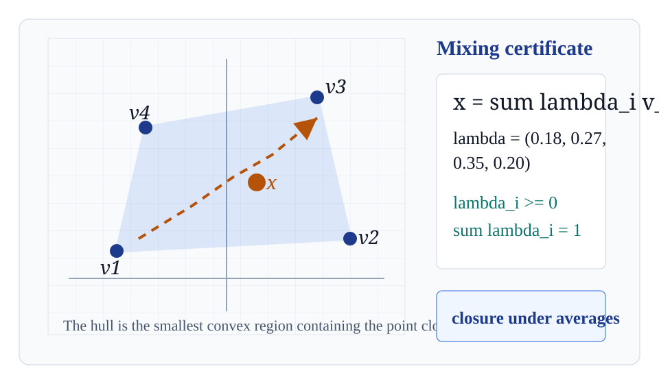
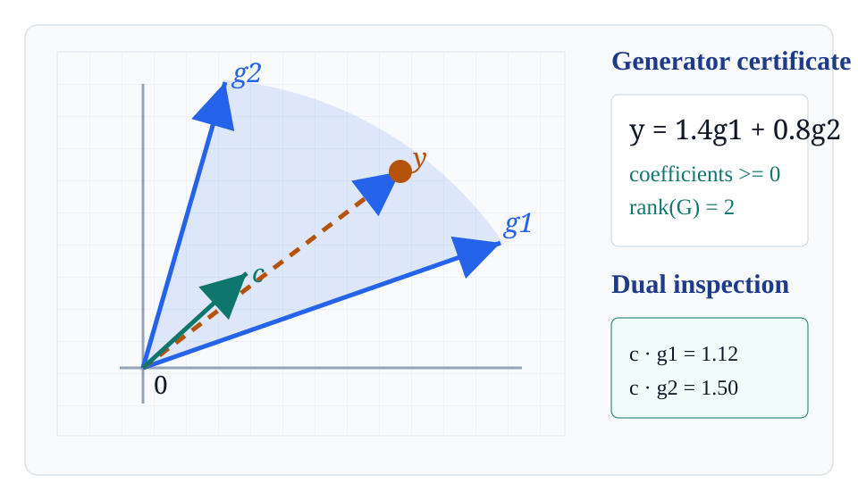
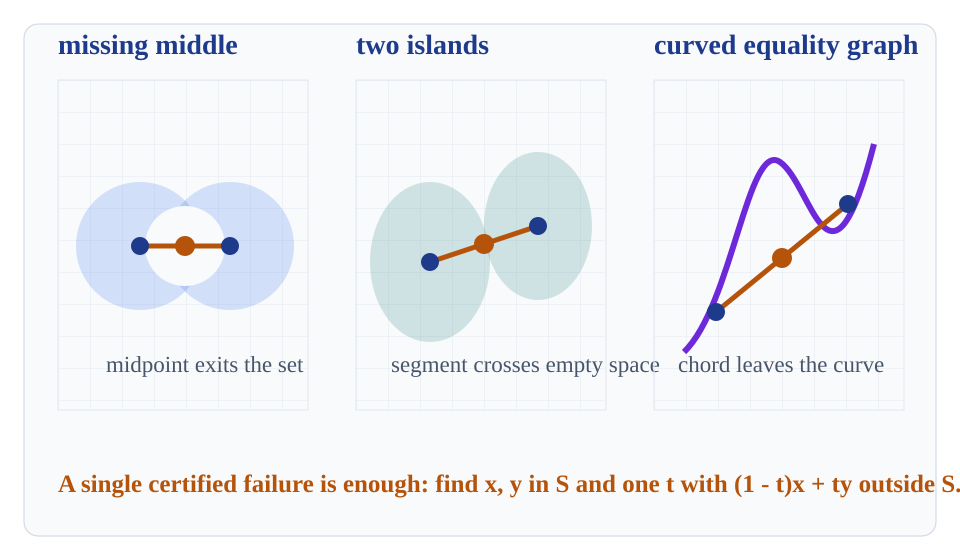

Convex Sets And Cones
A lecture on operations and certificates: line segments, convex combinations, hulls, cones, conic hulls, dual halfspace checks, and concrete tests for failure.
Segment Test

Definition-Level Test
A set is convex when every displayed segment survives every value of \(t\), not just the midpoint.
Inspection Habit
- Choose two points from the same candidate set.
- Sweep the whole interval of weights.
- Look for the first parameter that exits.
Convex Combinations
From Two Points To Many
Convex combinations are finite averages with explicit weights. They certify membership in any convex set containing the listed points.
Certificate Checklist
| Condition | Geometric meaning |
|---|---|
| \(\lambda_i \geq 0\) | No point is used by extrapolating through the others. |
| \(\sum_i \lambda_i = 1\) | The combination is affine and keeps the scale of the original space. |
| finite support | The certificate is checkable from a short list of points. |
Convex Hull As Closure Under Mixing

Smallest Convex Container
The convex hull of \(A\) is the set of all finite convex combinations of points of \(A\).
Closure Under Repeated Mixing
Mixing two already mixed points produces another convex combination, so the hull does not change after the operation is allowed.
Caratheodory-Style Compression View
Compression Principle
In \(\mathbb{R}^d\), a point in a convex hull can be certified using at most \(d+1\) active points.
The slide-local JSON records an original five-point certificate and a three-point certificate for the same point.
| Certificate | Active points | Weights |
|---|---|---|
| Original | p1, p2, p3, p4, p5 | 0.15, 0.20, 0.20, 0.25, 0.20 |
| Compressed | p2, p4, p5 | 0.30, 0.30, 0.40 |
| Target | Both reconstruct \(x=(1.60,2.00)\) with residual 0. | |
Artifact: assets/caratheodory-compression.json
Cones And Positive Scaling
Cone Closure
If \(K\) is also convex, it is closed under nonnegative combinations of its points. The origin is always present once the zero scale is allowed.
Conic Combinations
Convex Versus Conic Weights
| Combination | Formula | Constraint |
|---|---|---|
| Convex | \(\sum_i \lambda_i x_i\) | \(\lambda_i\geq0,\ \sum_i\lambda_i=1\) |
| Conic | \(\sum_i \alpha_i g_i\) | \(\alpha_i\geq0\) |
Membership Certificate
The sign check is the point: both coefficients are nonnegative, so \(y\) belongs to the conic hull of the two generators.
Pointed, Flat, And Full-Dimensional Examples
Flat
Generated by one ray. The cone is convex but has empty interior in the ambient plane.
Pointed
Contains no nonzero vector together with its negative. The apex is genuinely sharp.
Full-Dimensional
The generator span has rank two in \(\mathbb{R}^2\), so the cone has nonempty interior.
Polyhedral Cones From Generators

Generator Description
A finite list of rays gives a computational handle on the entire cone.
Extreme Ray Intuition
Boundary rays that cannot be split into two different cone directions behave as irreducible edges of the fan.
Dual Inspection By Halfspaces
Dual Cone Test
For a generated cone, it is enough to check the generators:
| Probe | Dot products | Verdict |
|---|---|---|
| \(c=(0.35,0.6)\) | 1.12, 1.495 | accepted |
| \(c=(0.9,-0.4)\) | 1.52, -0.43 | rejected |
One negative generator dot product is a halfspace witness that the probe is outside the dual cone.
Convexity Under Intersection
Operation Rule
If \(x\) and \(y\) belong to every set in the family, their whole segment belongs to every set too.
Why Halfspaces Matter
Polyhedra and many cones are intersections of linear inequalities. Convexity arrives one halfspace at a time.
Nonconvex Failure Gallery

Counterexample Form
One valid witness disproves convexity. It does not need to describe the whole set.
Inspection Prompt
- Where are the two endpoints?
- Which \(t\) fails first?
- Is the failure caused by a gap, a union, or a curved equality?
Numerical Membership Tests
Artifact: assets/slide-checks.json
Recap / Inspection Prompt
Can every segment between two points of \(S\) be certified inside \(S\)? If not, exhibit the first clear counterexample.
Is there a convex-weight, conic-weight, or halfspace-sign certificate that proves membership or proves exclusion?
Core Operations
- segments and convex combinations
- convex hulls and compression
- cones, conic hulls, and generator fans
Core Certificates
- nonnegative weights summing to one
- nonnegative conic coefficients
- halfspace signs and explicit failures